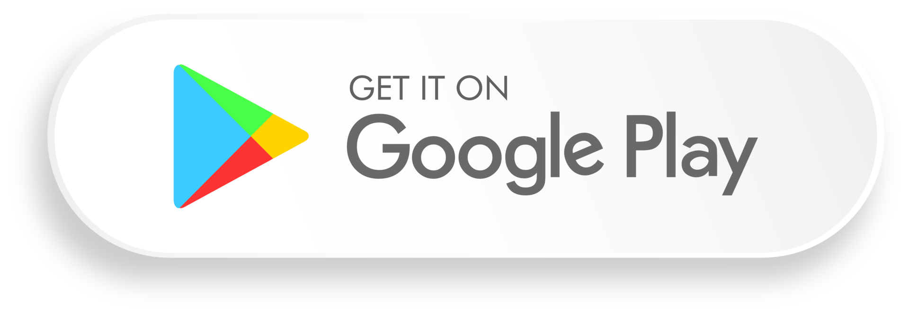

Nosso aplicativo de acessibilidade para smartwatch foi desenvolvido para tornar o dia a dia mais prático, inclusivo e independente. Com funcionalidades inteligentes e de fácil acesso, ele oferece recursos que auxiliam os usuários em suas atividades diárias, promovendo mais autonomia, segurança e qualidade de vida.
Acompanhe seus batimentos cardíacos diretamente pelo smartwatch, permitindo observar sua frequência cardíaca.
O aplicativo de smartphone permitirá que o usuário visualize seus dados em tempo real e gerará relatórios.
Caso ocorra alguma anormalidade em seus batimentos ou detecção de queda, nosso sistema acionará a emergência.
Transforme informações exibidas na tela em áudio, facilitando a navegação e o acesso aos conteúdos.
Fornece descrições de imagens em áudio, auxiliando pessoas com deficiência visual a compreender melhor o ambiente digital.
Acompanhe seus passos e monitore sua movimentação diária, incentivando hábitos mais saudáveis.
Para acessar registros mais detalhados, consultar informações com maior profundidade e acompanhar seu histórico de atividades, é necessário instalar também o aplicativo para smartphone. Essa integração complementa as funcionalidades do smartwatch, oferecendo uma experiência mais completa e permitindo um acompanhamento mais amplo dos dados registrados.
Mais do que um aplicativo, nossa proposta é utilizar a tecnologia como ferramenta de inclusão. Reunimos funcionalidades essenciais em um único dispositivo, proporcionando uma experiência mais acessível, intuitiva e conectada.
Nossa missão é transformar o smartwatch em um aliado da autonomia, aproximando a tecnologia de todos e tornando o cotidiano mais acessível.
